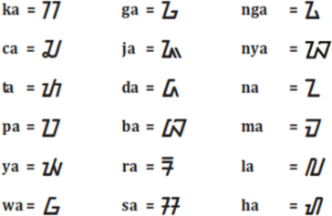
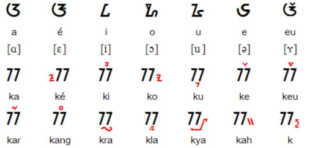
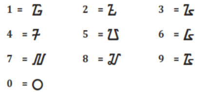
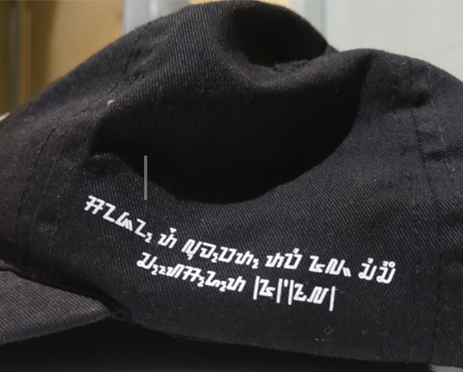
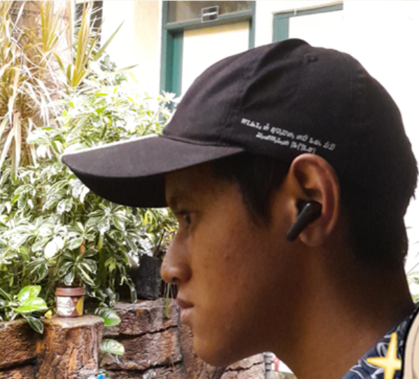

X - Tugas Basa Sunda
ᮃᮊ᮪ᮞᮛ ᮞᮥᮔ᮪ᮓ
Aksara Sunda
Ngawanohkeun salah sahiji warisan budaya Sunda ngaliwatan hurup, tanda, jeung angka tradisional.
Naon Ari Aksara Sunda Teh?
Aksara Sunda Baku téh nyaéta sistem tulisan anu dipaké pikeun nuliskeun Basa Sunda kontémporér, anu ogé mangrupakeun hasil panyuyuan (penyesuaian) tina Aksara Sunda Kuno. Kiwari, Aksara Sunda Baku ogé ilahar disebut Aksara Sunda waé.
Bagian Aksara Sunda

Rarangken

Angka
Tugas Kuring


Tugas di luhur dipigawé pikeun nguatkeun pamahaman karakter aksara Sunda dina bentuk visual jeung diterapkeun kana hirup sapopoe.